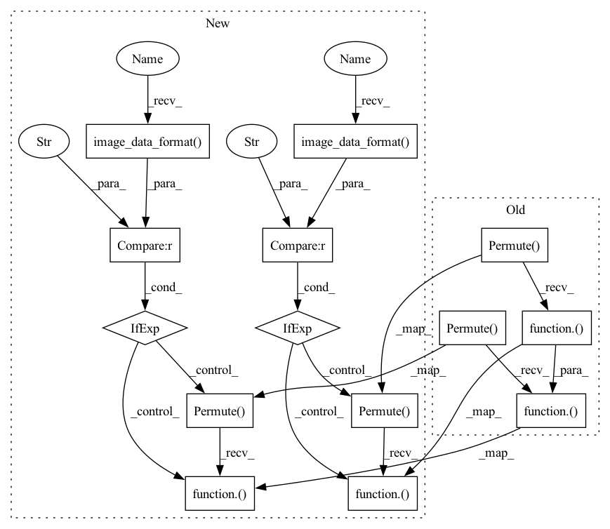

Pattern ID :23980
Before Change
def mlp_mixer_block(inputs, tokens_mlp_dim, channels_mlp_dim, use_bias=True, drop_rate=0, activation="gelu", name=None):
nn = layer_norm(inputs, name=name and name + "LayerNorm_0")
nn = keras.layers.Permute((2, 1), name=name and name + "permute_0")( nn)
nn = mlp_block(nn, tokens_mlp_dim, use_bias=use_bias, activation=activation, name=name and name + "token_mixing/")
nn = keras.layers.Permute((2, 1), name=name and name + "permute_1")( nn)
if drop_rate > 0:
nn = keras.layers.Dropout(drop_rate, noise_shape=(None, 1, 1), name=name and name + "token_drop")(nn)
token_out = keras.layers.Add(name=name and name + "add_0")([nn, inputs])
After Change
def mlp_mixer_block(inputs, tokens_mlp_dim, channels_mlp_dim, use_bias=True, drop_rate=0, activation="gelu", name=None):
nn = layer_norm(inputs, name=name and name + "LayerNorm_0")
nn = layers.Permute((2, 1), name=name and name + "permute_0")( nn) if backend .image_data_format() == "channels_last" else nn
nn = mlp_block(nn, tokens_mlp_dim, use_bias=use_bias, activation=activation, name=name and name + "token_mixing/")
nn = layers.Permute((2, 1), name=name and name + "permute_1")( nn) if backend.image_data_format() == "channels_last" else nn
if drop_rate > 0:
nn = layers.Dropout(drop_rate, noise_shape=(None, 1, 1), name=name and name + "token_drop")(nn)
token_out = layers.Add(name=name and name + "add_0")([nn, inputs])In pattern: SUPERPATTERN
Frequency: 3
Non-data size: 14
Instances Fragment ID: 74547536
Project Name: leondgarse/keras_cv_attention_models
Commit Name: 2f70b0d51c8f2b1f8664f32dc75ecc1001758946
Time: 2023-01-29
Author: leondgarse@gmail.com
File Name: keras_cv_attention_models/mlp_family/mlp_mixer.py
M Class Name: AnonimousClass
N Class Name: AnonimousClass
M Method Name: mlp_mixer_block(7)
N Method Name: mlp_mixer_block(7)
M Parent Class:
N Parent Class:
M File Name: keras_cv_attention_models/mlp_family/mlp_mixer.py
N File Name: keras_cv_attention_models/mlp_family/mlp_mixer.py
M Start Line: 42
M End Line: 54
N Start Line: 42
N End Line: 56
Before Change
def res_mlp_block(inputs, channels_mlp_dim, drop_rate=0, activation="gelu", name=None):
nn = ChannelAffine(use_bias=True, name=name + "norm_1")(inputs)
nn = keras.layers.Permute((2, 1), name=name + "permute_1")( nn)
nn = keras.layers.Dense(nn.shape[-1], name=name + "token_mixing")(nn)
nn = keras.layers.Permute((2, 1), name=name + "permute_2")( nn)
nn = ChannelAffine(use_bias=False, name=name + "gamma_1")(nn)
if drop_rate > 0:
nn = keras.layers.Dropout(drop_rate, noise_shape=(None, 1, 1), name=name + "token_drop")(nn)
token_out = keras.layers.Add(name=name + "add_1")([inputs, nn])After Change
input_channel = inputs.shape[-1] if backend.image_data_format() == "channels_last" else inputs.shape[1]
nn = ChannelAffine(use_bias=True, axis=channel_axis, name=name + "norm_1")(inputs)
nn = layers.Permute((2, 1), name=name + "permute_1")( nn) if backend.image_data_format() == "channels_last" else nn
nn = layers.Dense(nn.shape[-1], name=name + "token_mixing")(nn)
nn = layers.Permute((2, 1), name=name + "permute_2")( nn) if backend.image_data_format() == "channels_last" else nn
nn = ChannelAffine(use_bias=False, axis=channel_axis, name=name + "gamma_1")(nn)
if drop_rate > 0:
nn = layers.Dropout(drop_rate, noise_shape=(None, 1, 1), name=name + "token_drop")(nn) Fragment ID: 74547538
Project Name: leondgarse/keras_cv_attention_models
Commit Name: 2f70b0d51c8f2b1f8664f32dc75ecc1001758946
Time: 2023-01-29
Author: leondgarse@gmail.com
File Name: keras_cv_attention_models/mlp_family/res_mlp.py
M Class Name: AnonimousClass
N Class Name: AnonimousClass
M Method Name: res_mlp_block(5)
N Method Name: res_mlp_block(5)
M Parent Class:
N Parent Class:
M File Name: keras_cv_attention_models/mlp_family/res_mlp.py
N File Name: keras_cv_attention_models/mlp_family/res_mlp.py
M Start Line: 58
M End Line: 74
N Start Line: 59
N End Line: 81
Before Change
uu, vv = functional.split(inputs, 2, axis=-1)
// print(f">>>> {uu.shape = }, {vv.shape = }")
vv = layer_norm(vv, name=name and name + "vv_ln")
vv = layers.Permute((2, 1), name=name and name + "permute_1")( vv)
ww_init = initializers.truncated_normal(stddev=1e-6)
vv = layers.Dense(vv.shape[-1], kernel_initializer=ww_init, bias_initializer="ones", name=name and name + "vv_dense")(vv)
vv = layers.Permute((2, 1), name=name and name + "permute_2")( vv)
// print(f">>>> {uu.shape = }, {vv.shape = }")
gated_out = layers.Multiply()([uu, vv])
return gated_out
After Change
uu, vv = functional.split(inputs, 2, axis=-1 if backend.image_data_format() == "channels_last" else 1)
// print(f">>>> {uu.shape = }, {vv.shape = }")
vv = layer_norm(vv, name=name and name + "vv_ln")
vv = layers.Permute((2, 1), name=name and name + "permute_1")( vv) if backend.image_data_format() == "channels_last" else vv
ww_init = initializers.truncated_normal(stddev=1e-6)
vv = layers.Dense(vv.shape[-1], kernel_initializer=ww_init, bias_initializer="ones", name=name and name + "vv_dense")(vv)
vv = layers.Permute((2, 1), name=name and name + "permute_2")( vv) if backend.image_data_format() == "channels_last" else vv
// print(f">>>> {uu.shape = }, {vv.shape = }")
gated_out = layers.Multiply()([uu, vv])
return gated_out Fragment ID: 74547535
Project Name: leondgarse/keras_cv_attention_models
Commit Name: 0bba0f214ddef4d448b10f4c6d16c2c08aacbcb6
Time: 2023-01-31
Author: leondgarse@gmail.com
File Name: keras_cv_attention_models/mlp_family/gated_mlp.py
M Class Name: AnonimousClass
N Class Name: AnonimousClass
M Method Name: spatial_gating_block(2)
N Method Name: spatial_gating_block(2)
M Parent Class:
N Parent Class:
M File Name: keras_cv_attention_models/mlp_family/gated_mlp.py
N File Name: keras_cv_attention_models/mlp_family/gated_mlp.py
M Start Line: 21
M End Line: 25
N Start Line: 21
N End Line: 25